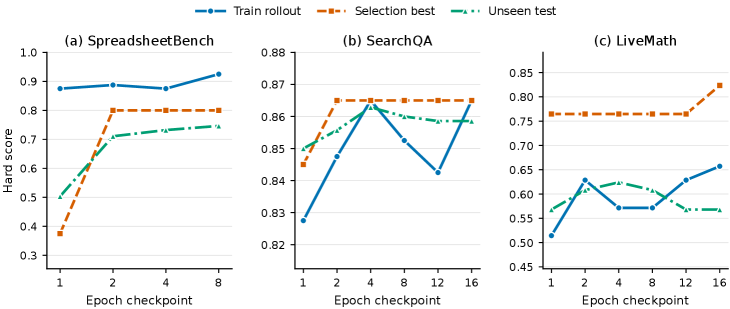
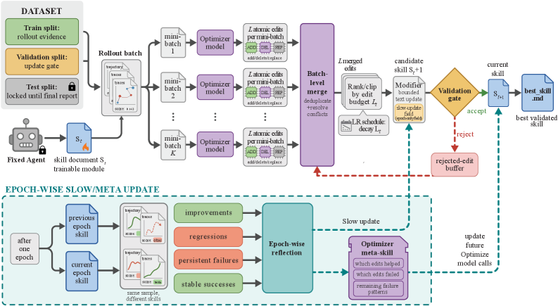

SkillOpt: Executive Strategy for Self-Evolving Agent Skills
Microsoft • Shanghai Jiao Tong University • Tongji University • Fudan University
Paper Information
Benchmarks

Datasets
-
SearchQA: Extractive question answering domain. Single-round QA measuring the agent's ability to find and extract correct answers.
-
SpreadsheetBench: Spreadsheet-oriented code and tool use. Multi-round codegen with up to $30$ turns and a real openpyxl/pandas runtime (default mode=multi). Evaluates procedural spreadsheet manipulation.
-
OfficeQA: Local-document reasoning. Multi-turn tool loops with up to $24$ tool calls per task. Tests procedural document interaction and answer-format compliance.
-
DocVQA: Multimodal document visual question answering. Single-round multimodal QA requiring evidence binding to specific visual regions.
-
LiveMathematicianBench: Mathematical multiple-choice reasoning. Evaluates domain-specific mathematical procedure and answer-format discipline (abbreviated LiveMath in tables). Tightly bounded training pool ($35$ training items per epoch).
-
ALFWorld: Sequential embodied decision making. Persistent embodied interaction with up to $50$ steps per episode. Tests stateful execution policies ($39$ training, $140$ selection, $134$ test environments).
-
OlympiadBench: Mathematical competition problems. Used for cross-benchmark transfer evaluation.
-
Omni-MATH: Mathematical reasoning benchmark. Used as a transfer target from OlympiadBench-trained skills.
Evaluation Metrics
- Each benchmark's native hard score or exact-match accuracy on held-out test splits.
- SearchQA: extractive QA accuracy.
- SpreadsheetBench: spreadsheet code/tool execution success.
- OfficeQA: local-document reasoning exact match.
- DocVQA: multimodal document QA accuracy.
- LiveMathematicianBench: mathematical MCQ accuracy.
- ALFWorld: sequential decision-making success rate.
Experimental Setup
| Configuration | Default Value |
|---|---|
| Epochs | $4$ |
| Rollout batch size | $40$ per step |
| Reflection minibatch size | $8$ (with $16$ parallel analyst workers, merge batch $8$) |
| Textual learning rate $L_t$ | $4$ with cosine decay (floor $2$) |
| LR schedules | Constant, linear, cosine, autonomous |
| Validation gating | Strictly greater than current selection score (ties rejected) |
| Slow update | $20$ sampled tasks per epoch comparing previous/current skill |
| Meta skill | Optimizer-side only (summarizes accepted/rejected patterns) |
| Edit mode | Patch (default); rewrite_from_suggestions (alternative) |
| Rejected-edit buffer | Enabled (epoch-local) |
| Refinement rounds | Up to $3$ per minibatch |
| Reasoning effort | Medium (teacher and student) |
| Split | Default $2{:}1{:}7$ (train:selection:test) when benchmark-specific split unavailable |
| Split seed | $\mathtt{split\_seed=42}$ |
Target models tested: GPT-5.5, GPT-5.4, GPT-5.4-mini, GPT-5.4-nano, GPT-5.2, Qwen3.5-4B, Qwen3.6-35B-A3B.
Harnesses: Direct chat (single chat completion), Codex CLI (workspace-write sandbox), Claude Code CLI (workspace contract mirroring Codex).
Baselines: No skill, human-written skill, one-shot LLM-generated skill (by GPT-5.5), Trace2Skill, TextGrad, GEPA, EvoSkill. All baselines use the same target model, held-out test split, and scorer.
Previous Work & Limitations
Key Prior Approaches
-
GEPA: Demonstrates that trajectory feedback can guide reflective prompt evolution, outperforming reinforcement learning on several language-agent tasks. Treats language artifacts as optimizable objects that directly exploit execution feedback, but mainly targets prompts rather than reusable domain skills.
-
ABSTRAL: Extends reflective evolution from single prompts to multi-agent design documents. Enables test-time agentic system evolution without gradients or fine-tuning, but targets system-level configurations rather than persistent procedural skill documents.
-
EvoTest: Evolves full agentic system configurations at test time without gradient-based fine-tuning. Exploits execution feedback for optimization but does not produce a portable, validated skill artifact that can be reused across models and harnesses.
-
SkillsBench: Frames skills as reusable procedural knowledge covering tool policies, applicability conditions, execution routines, and supporting resources. Provides a benchmark and taxonomy for agentic skills but does not address systematic optimization of a single skill document.
-
SoK on Agentic Skills: A systematization of knowledge covering skills as reusable procedural knowledge for agents. Establishes the conceptual foundations for skill libraries and sharing but does not propose training-style optimization controls.
-
Trace2Skill: Mines skill artifacts from training trajectories via trajectory-level skill distillation. Distills trajectory lessons into reusable skills but lacks a held-out validation gate and iterative editing controls.
-
TextGrad: Performs gradient-style natural-language prompt optimization using textual gradients from execution feedback. Optimizes prompts but does not target a persistent skill artifact with bounded edits, validation gating, or rejected-edit memory.
-
EvoSkill: Evolves skill folders through failure analysis and creation-evaluation-revision loops. The strongest harness-side competitor, but lacks bounded textual learning rates, rejected-edit memory, and epoch-wise slow/meta updates.
Limitations & Gaps
Prior approaches share several limitations that SkillOpt addresses:
-
No bounded edit control: GEPA, TextGrad, and EvoSkill allow uncontrolled rewrites that can erase useful rules, introduce incompatible instructions, or overfit to local failures.
-
No held-out validation gate: Trace2Skill mines trajectory lessons without checking whether proposed edits actually generalize beyond training rollouts.
-
No negative feedback memory: EvoSkill and other evolution-based methods do not retain rejected edits, so they may repeat failed proposals in subsequent iterations.
-
No long-horizon guidance: Step-level prompt optimization methods like TextGrad and GEPA lack an epoch-wise slow/meta update to capture durable procedural lessons across epochs.
-
Target prompts, not persistent skills: ABSTRAL, EvoTest, TextGrad, and GEPA optimize prompts, system designs, or configurations rather than a portable skill document that can be trained, validated, exported, and reused.
-
No deep-learning-style training discipline: Prior skill construction systems (SkillsBench, SoK) emphasize skill discovery and repository growth but do not apply training controls like learning rates, schedules, validation, and regularization to skill optimization.
Related Work Landscape
No related work exploration results were provided, so no related papers could be extracted.
Method


What It Does
SkillOpt treats a natural-language skill document as the trainable external state of a frozen agent, applying deep-learning-style optimization controls to text-space skill editing. The pipeline operates as follows:
Problem Formulation
Given a frozen target model $M$, harness $h$, task $x$, and skill $s$:
$$ (\tau(s), r(s)) = h(M, x, s), \qquad r(s) \in [0, 1] $$The optimizer uses three disjoint splits: - $D_{\mathrm{tr}}$ (train): supplies rollout evidence - $D_{\mathrm{sel}}$ (selection): held-out validation gate - $D_{\mathrm{test}}$ (test): final reporting only
The best skill is selected as:
$$ s^{\star}_{\mathrm{sel}} = \arg\max_{s \in \mathcal{C}(D_{\mathrm{tr}})} \frac{1}{|D_{\mathrm{sel}}|} \sum_{x \in D_{\mathrm{sel}}} r(s) $$Step-by-Step Optimization Loop
-
Forward Pass (Rollout Evidence): The frozen target model $M$ executes a rollout batch from $D_{\mathrm{tr}}$ with the current skill $s_{\mathrm{cur}}$. The harness records task metadata, messages, tool calls, observations, command outputs, final answers, and verifier feedback. This batch is the evidence unit.
-
Backward Pass (Minibatch Reflection): A separate optimizer model separates failures from successes, partitions each group into reflection minibatches (default size $B_m = 8$), and for each minibatch:
- Failure minibatches propose missing or corrective rules via structured
add/delete/replaceedits. - Success minibatches propose reinforcement edits for patterns not already in the skill.
-
Up to $16$ analyst workers run reflections in parallel.
-
Hierarchical Edit Merging: Local proposals are merged in stages:
- Consolidate failure-driven edits separately via
merge_failure.md. - Consolidate success-driven edits separately via
merge_success.md. - Combine both via
merge_final.md, with failure corrections taking priority. -
Duplicate, contradictory, and example-specific suggestions are filtered.
-
Bounded Text Update (Textual Learning Rate): The optimizer ranks merged edits by expected utility and clips to the top $L_t$ edits (the textual learning rate). Default: $L_t = 4$ with cosine decay (floor $L_t = 2$). Supports constant, linear, cosine, and autonomous schedules.
-
Candidate Skill Generation: Selected edits produce a candidate skill $s_{\mathrm{cand}}$ in patch mode (atomic
append,insert_after,replace,delete) or rewrite mode (full skill rewrite conditioned on suggestions). Step-level edits cannot overwrite the protected slow-update field. -
Validation Gate: $s_{\mathrm{cand}}$ is evaluated on $D_{\mathrm{sel}}$ with the same frozen model and harness.
- If score > current selection score → accepted as new $s_{\mathrm{cur}}$.
- If score > best score so far → also becomes
best_skill.md. -
Otherwise → rejected.
-
Rejected-Edit Buffer: Rejected edits, observed failure patterns, and score drops are stored in an epoch-local buffer. Later reflection calls in the same epoch receive this buffer as negative feedback.
-
Epoch-Wise Slow/Meta Update: At the end of each epoch:
- $20$ sampled training tasks are rolled out under both the previous-epoch and current-epoch skill.
- Tasks are categorized into improvements, regressions, persistent failures, and stable successes.
- The optimizer writes a concise longitudinal guidance block into a protected slow-update field (delimited by
<!-- SLOW_UPDATE_START -->and<!-- SLOW_UPDATE_END -->). - This candidate also passes through the validation gate.
-
An optimizer-side meta skill summarizes which edit patterns helped or were rejected across epochs, prepended to future optimizer prompts (not shipped with deployed skill).
-
Export: Only the best accepted skill is exported as
best_skill.md(typically $300$–$2{,}000$ tokens).
Concrete Walkthrough (SpreadsheetBench)
- Input: Initial skill instructs the agent to use Python spreadsheet libraries and preserve workbook content.
- Rollout: GPT-5.5 runs $40$ SpreadsheetBench training tasks with current skill; many fail because the agent writes formulas instead of evaluated static values.
- Reflection: Optimizer identifies the recurring pattern “grader reads cell values, agent writes formulas” across failure minibatches.
- Edit: Proposed edit: “When the grader reads cell values, compute and write evaluated static values, even if the prompt mentions formulas.”
- Validation: Candidate skill tested on selection split; $41.8 \to 80.7$ on held-out test.
- Output: Compact
best_skill.mdwith $1$–$4$ accepted edits encoding workbook-forensics procedures.
How Previous Methods Work
Trace2Skill (Trajectory-Level Skill Distillation)
- Runs the target model on training tasks and collects trajectories.
- Mines skill lessons from trajectory patterns (successes and failures).
- Distills these lessons into a static skill document.
- Deploys the skill without iterative validation or bounded edits.
Key difference: No held-out gate, no rejected-edit buffer, no bounded learning rate.
TextGrad (Gradient-Style Prompt Optimization)
- Executes the target model with the current prompt on training tasks.
- Computes textual gradients (natural-language feedback on failures).
- Applies gradient-like updates to the prompt.
- Iterates without a learning-rate budget or held-out validation.
Key difference: Optimizes prompts, not persistent skill artifacts; no bounded edit budget; no epoch-wise slow/meta update.
EvoSkill (Skill-Folder Evolution)
- Runs the target model under a tool-use harness with a skill folder.
- Analyzes failures and proposes skill folder revisions.
- Evolves the skill folder through creation-evaluation-revision loops.
- Deploys the evolved folder.
Key difference: Lacks bounded textual learning rates, rejected-edit memory, and epoch-wise slow/meta updates.
Why — Motivation & Design Rationale
Each design component addresses a specific failure mode of prior work:
-
Bounded textual learning rate ($L_t$): Unbounded rewrites (as in ad hoc prompt rewriting or TextGrad) can erase useful rules, introduce incompatible instructions, or overfit to a local failure. Bounded updates preserve continuity between adjacent skill versions, enabling stable optimization.
-
Held-out validation gate: Plausible textual diagnoses can still hurt the actual target model. The strict gate (candidate accepted only if selection score is strictly greater than current) turns reflection into propose-and-test optimization rather than unconditional self-editing.
-
Rejected-edit buffer: Failed edits carry information. Recording them and feeding them back to later optimizer calls prevents repeating harmful changes and focuses attention on unresolved failures—acting as negative feedback without adding inference-time cost.
-
Epoch-wise slow/meta update: Fast step-level edits learn from the current batch; the slow update learns from adjacent epochs. It captures durable domain lessons that persist across batches, acting like a momentum term. Without it, SpreadsheetBench drops by $-22.5$ points—the largest single ablation degradation.
-
Minibatch reflection: Single trajectories produce anecdotal fixes; minibatches expose reusable procedural errors (consistent wrong-source searches, wrong-format answers, unverified tool results). Hierarchical merging ensures final edits represent recurring evidence.
-
Harness-agnostic adapter interface: A stronger optimizer model can train a reusable skill artifact offline, and the resulting
best_skill.mdcan be deployed across target models, harnesses, and nearby benchmarks without changing model weights or adding inference-time calls. -
Protected slow-update field: Separates fast intra-epoch edits from slower cross-epoch consolidation, preventing local edits from overwriting durable procedural lessons.
Performance Evaluation
Main Results
SkillOpt is best or tied-best on all 52 of 52 evaluated (model, benchmark, harness) cells, beating every per-cell competitor among no-skill, human-skill, one-shot LLM-skill, Trace2Skill, TextGrad, GEPA, and EvoSkill.
GPT-5.5 Direct Chat (Six Benchmarks)
| Benchmark | No Skill | SkillOpt | $\Delta$ | Best Baseline | Gap to Oracle |
|---|---|---|---|---|---|
| SearchQA | 77.7 | 87.3 | +9.6 | — | — |
| SpreadsheetBench | 41.8 | 80.7 | +38.9 | — | — |
| OfficeQA | 33.1 | 72.1 | +39.0 | — | — |
| DocVQA | 78.8 | 91.2 | +12.4 | — | — |
| LiveMathematicianBench | 37.6 | 66.9 | +29.3 | — | — |
| ALFWorld | 83.6 | 95.5 | +11.9 | — | — |
| Average | 58.8 | 82.3 | +23.5 | 76.9 | +5.4 |
Harness Results (GPT-5.5)
| Harness | No Skill Avg | SkillOpt Avg | $\Delta$ | vs. EvoSkill |
|---|---|---|---|---|
| Codex | — | — | +24.8 | +14.0 |
| Claude Code | — | — | +19.1 | +3.2 |
Cross-Model Average Improvements (Direct Chat)
| Model | Avg $\Delta$ over No Skill |
|---|---|
| GPT-5.5 | +23.5 |
| GPT-5.4 | +12.7 |
| GPT-5.4-mini | +15.4 |
| GPT-5.4-nano | +26.7 |
| GPT-5.2 | +16.6 |
| Qwen3.5-4B | +19.2 |
| Qwen3.6-35B-A3B | +9.1 |
Ablation Studies
-
Evidence and batch sizes: Procedural benchmarks (SpreadsheetBench, LiveMath) reward more training evidence—SpreadsheetBench climbs $47.5 \to 78.0$ as the optimizer sees $1 \to 100\%$ of training data. SearchQA saturates after $20\%$. Varying reflection minibatch ($1$–$32$) and rollout batch ($8$–full epoch) keeps scores within tight bands, confirming gains are not fragile to batch size.
-
Textual learning rate and schedule: Sweeping $L_t \in \{1, 2, 4, 8, 16\}$ shows moderate budgets ($L_t = 4$) are competitive. Constant, cosine, and linear schedules are all effective ($87.3/80.7/62.1$, $87.1/77.5/61.3$, $87.2/72.9/62.9$). Any moderate bounded budget beats unbounded rewriting ($84.6/75.7/57.3$).
-
Rejected-edit buffer: Removing it drops scores by $1.6$, $4.6$, and $2.4$ points on SearchQA, SpreadsheetBench, and LiveMath respectively.
-
Epoch-wise slow/meta update: Removing both meta skill and slow update drops SpreadsheetBench from $77.5$ to $55.0$ ($-22.5$ points)—the largest single ablation degradation.
-
Validation gate strictness: The strictly-greater criterion makes rejected edits informative negative feedback rather than hidden state. Validation checkpoints track held-out test performance across epochs, confirming the gate selects generalizable skills.
-
Optimizer strength: A target-matched optimizer (same scale as deployed model) recovers $56$–$74\%$ of the strong-optimizer gain, confirming the optimization loop itself contributes substantial value beyond teacher distillation.
Transfer Experiments
-
Cross-model: SpreadsheetBench skill trained on GPT-5.4 transfers to GPT-5.4-mini ($+9.4$) and GPT-5.4-nano ($+3.0$). LiveMath skills transfer to GPT-5.4-mini ($+4.5$) and GPT-5.4-nano ($+5.6$). All four transfers are positive.
-
Cross-harness: SpreadsheetBench skill trained in Codex transfers to Claude Code with $+59.7$ point gain ($22.1 \to 81.8$). Symmetric Claude-Code→Codex transfer adds $+43.6$ ($27.5 \to 71.1$).
-
Cross-benchmark: OlympiadBench skill transfers positively to Omni-MATH: $+3.7$ on GPT-5.4, $+1.8$ on GPT-5.4-mini, $+1.3$ on GPT-5.4-nano.
Key Takeaways
-
Bounded text-space optimization with validation gating is the strongest no-weight-update adaptation strategy among all baselines tested, winning on all 52 evaluated cells across six benchmarks, seven models, and three harnesses.
-
The deployed artifact is compact ($<2{,}000$ tokens), assembled from only $1$–$4$ accepted edits, and encodes transferable procedural knowledge rather than instance-specific memorization—evidenced by positive cross-model, cross-harness, and cross-benchmark transfer.
-
The optimization loop itself contributes substantial value: even with a target-matched optimizer, $56$–$74\%$ of the strong-optimizer gain is recovered, confirming SkillOpt is not merely distillation from a stronger teacher but a principled training procedure.
Critical Analysis
SkillOpt presents an intriguing framework for text-space skill optimization with deep-learning-inspired controls. However, the audit reveals several critical concerns: (1) the use of model names (GPT-5.5, GPT-5.4, Qwen3.6-35B-A3B) from May 2026 raises fundamental reproducibility and verifiability issues; (2) statistically, the absence of confidence intervals or significance tests across 52 'win or tie' cells undermines the core claim of universal superiority; (3) the ablation removing both meta skill and slow update conflates two components, making individual contribution unassessable; (4) the deep-learning analogy is conceptually loose and may overstate the rigor of the optimization procedure; and (5) several design choices (default hyperparameters, LLM-as-judge for subjective tasks) lack sufficient justification or sensitivity analysis.
-
[HIGH] The paper uses model identifiers such as 'GPT-5.5', 'GPT-5.4', 'GPT-5.4-mini', 'GPT-5.4-nano', 'GPT-5.2', and 'Qwen3.6-35B-A3B' that correspond to models not publicly available or verifiable as of the current date. This creates a fundamental reproducibility crisis: no independent researcher can replicate, verify, or build upon any of the 52 reported evaluation cells. The paper provides no system card references, API documentation links, or version hashes that would allow future verification when these models become available. For a paper claiming 'best or tied-best on all 52 of 52 evaluated cells,' the inability to independently verify even a single cell is a severe limitation.
-
[HIGH] The headline claim of 'best or tied-best on all 52 of 52 evaluated (model, benchmark, harness) cells' is reported without any confidence intervals, standard deviations, or statistical significance tests. Since all benchmarks involve stochastic language model sampling, single-run point estimates are subject to sampling variance. Without multiple seeds or bootstrap confidence intervals, the '52/52' claim is statistically unsound. A two-percentage-point difference on SearchQA or DocVQA could easily fall within noise, especially for benchmarks with fewer test items. The paper should report at least 3-5 seeds and use paired significance tests (e.g., McNemar's test) to support the 'wins on all cells' claim.
-
[HIGH] The key ablation showing 'removing both meta skill and slow update drops SpreadsheetBench from $77.5$ to $55.0$ ($-22.5$ points)—the largest single ablation degradation' conflates two distinct components into a single ablation condition. This makes it impossible to determine whether the meta skill, the slow update, or their interaction drives the observed effect. Given that this $-22.5$ point drop is repeatedly cited as the strongest evidence for the design, the lack of separate ablations for each component represents a critical gap. If removing only the slow update yields a $-20$ point drop while removing only the meta skill yields $-2$ points, the narrative would change substantially.
-
[MEDIUM] The deep-learning analogy (learning rates, schedules, minibatches, momentum, regularization) is conceptually loose and potentially misleading. In actual deep learning, the learning rate controls a continuous gradient step in a differentiable landscape with well-defined curvature. In SkillOpt, the 'textual learning rate' $L_t$ simply caps the count of discrete text edits—an integer with no connection to gradient magnitude, loss curvature, or parameter geometry. Calling it a 'learning rate' overstates the mathematical structure: there is no gradient, no convergence guarantee, no convexity or smoothness, and no formal relationship between $L_t$ and optimization trajectory. The paper should clarify that this is an analogy for intuition, not a formal correspondence.
-
[MEDIUM] The validation gate uses a selection split $D_{\mathrm{sel}}$ with a 'strictly greater' acceptance criterion, but the paper does not report the size of $D_{\mathrm{sel}}$ for most benchmarks or analyze the risk of selection-split overfitting. With only four epochs and multiple candidate evaluations per epoch, the optimizer effectively performs dozens of model-selection rounds on $D_{\mathrm{sel}}$. For ALFWorld, the paper mentions only $140$ selection environments—if dozens of candidates are evaluated, the gate may select skills that happen to score well on this small split by chance. The paper lacks an analysis of selection-split sensitivity (e.g., varying $D_{\mathrm{sel}}$ size) or nested cross-validation.
-
[MEDIUM] The paper claims that only $1$–$4$ accepted edits produce gains of $+29.3$ to $+39.0$ points on procedural benchmarks, but this edit economy raises a red flag about the initial skill quality. If a single accepted edit (e.g., 'write evaluated static values instead of formulas') lifts SpreadsheetBench by $+38.9$ points, it suggests the initial skill and baseline methods catastrophically missed an obvious formatting rule. The paper does not address whether the same $1$–$4$ rules could have been identified by a simpler procedure (e.g., a single round of failure analysis by a human or a one-shot LLM). The comparison against baselines may be unfair if baselines were not given the same iterative feedback opportunity.
-
[MEDIUM] The paper does not provide computational cost breakdowns for the optimizer model calls, only reporting 'training tokens per test-set point.' The full cost includes: (1) forward-pass rollouts of the target model on $D_{\mathrm{tr}}$, (2) forward-pass evaluations on $D_{\mathrm{sel}}$ for every candidate, (3) optimizer model calls for reflection, merging, ranking, slow update, and meta skill generation. With $16$ parallel analyst workers, $3$ refinement rounds per minibatch, hierarchical merging, and slow-update rollouts, the total API cost could be substantial. The paper should report total API calls and estimated monetary cost per benchmark to allow practitioners to assess feasibility.
-
[MEDIUM] The cross-benchmark transfer experiment (OlympiadBench $\to$ Omni-MATH) reports gains of only $+3.7$, $+1.8$, and $+1.3$ points without error bars or multiple seeds. Given the small magnitude (potentially within noise) and the absence of statistical testing, the claim that 'optimized skills transfer to nearby benchmarks' is not adequately supported. The paper should either report confidence intervals or acknowledge that these gains may not be statistically significant.
-
[MEDIUM] The paper evaluates on six benchmarks but several have notable distribution biases. SearchQA is known to be near-ceiling for frontier models (no-skill baseline $77.7$, and SkillOpt reaches $87.3$), limiting headroom. DocVQA similarly starts at $78.8$. The largest gains appear on benchmarks with strict formatting requirements (SpreadsheetBench, OfficeQA), which suggests the method excels at discovering output-format conventions rather than improving underlying reasoning. The paper does not discuss this distinction, which limits the generalizability claim to 'procedural format knowledge' rather than 'reasoning capability.'
-
[MEDIUM] The comparison against TextGrad and GEPA may be unfair because these methods optimize prompts, not skill documents. The paper itself acknowledges this distinction ('optimizes prompts, not persistent skill artifacts') but still includes them in the unified comparison. A fairer comparison would either (a) adapt TextGrad/GEPA to optimize the same skill document format, or (b) restrict the comparison to methods targeting the same artifact type. Including prompt-optimization methods as baselines for skill-document optimization inflates SkillOpt's apparent advantage.
-
[MEDIUM] The paper claims SkillOpt is 'harness-agnostic' and demonstrates cross-harness transfer (Codex $\to$ Claude Code), but the cross-harness transfer is only tested on SpreadsheetBench and LiveMath. These two benchmarks involve Python-executable tasks where the underlying tool API (openpyxl/pandas) is shared across harnesses. For benchmarks requiring harness-specific APIs (e.g., file system operations, shell commands), cross-harness transfer may not hold. The paper's claim that 'the learned rules are not only harness-specific command recipes' is based on only two data points, both of which involve shared Python libraries.
-
[MEDIUM] The default hyperparameters ($L_t = 4$, rollout batch $= 40$, minibatch $= 8$, $4$ epochs, $20$ slow-update tasks) are presented without systematic tuning justification. While the ablations show that performance is 'robust' to batch-size variation, there is no hyperparameter search protocol described. It is unclear whether these defaults were chosen after a systematic search (raising concerns about test-set leakage through manual tuning) or set arbitrarily (raising concerns about suboptimal performance). The paper should disclose the hyperparameter selection protocol.
-
[LOW] The 'optimizer-strength' experiment (Table 5) compares GPT-5.5 as optimizer vs. a target-matched optimizer and reports $56$–$74\%$ of gains are recovered by the weaker optimizer. However, this comparison uses only four (benchmark, target) cells (SpreadsheetBench and SearchQA with GPT-5.4-mini and GPT-5.4-nano). With only four cells and no error bars, the claim that 'the optimization loop itself contributes substantial value beyond teacher distillation' is weakly supported. A broader evaluation across more benchmarks and models is needed.
-
[LOW] The paper does not discuss potential negative societal impacts of automated skill optimization. Optimized skills that encode domain-specific heuristics could be deployed in high-stakes settings (e.g., financial analysis, legal document processing) where procedural shortcuts may introduce systematic biases or errors. The learned skills are compact and inspectable (a stated advantage), but the paper does not discuss whether human auditing of the optimization process (not just the final artifact) is necessary for deployment accountability.
-
[LOW] The rejected-edit buffer is described as an 'epoch-local' store, meaning rejected edits from one epoch do not carry forward to subsequent epochs. This design choice is not justified or ablated. If the same harmful edit is proposed in multiple epochs (which is plausible given that the same failure patterns may persist), the epoch-local scope means the optimizer re-evaluates the same rejected proposal repeatedly. A persistent rejected-edit buffer across epochs might be more efficient. The paper should justify the epoch-local design choice.
-
[LOW] The paper claims that 'previous skill evolution methods (EvoSkill, Trace2Skill) lack bounded textual learning rates, rejected-edit memory, and epoch-wise slow/meta updates.' However, these methods are cited via Google Scholar search links rather than specific papers, making it difficult to verify these claims. The paper should cite specific, identifiable publications and clearly describe the baseline implementations used.
-
[LOW] The 'autonomous' learning-rate schedule is mentioned as one of the supported options but is never defined, ablated, or compared. The paper lists 'constant, linear, cosine, and autonomous schedules' in the method section and reports ablation results for constant, linear, and cosine, but the autonomous schedule is conspicuously absent from all experimental results. This leaves an undefined component in the method description.